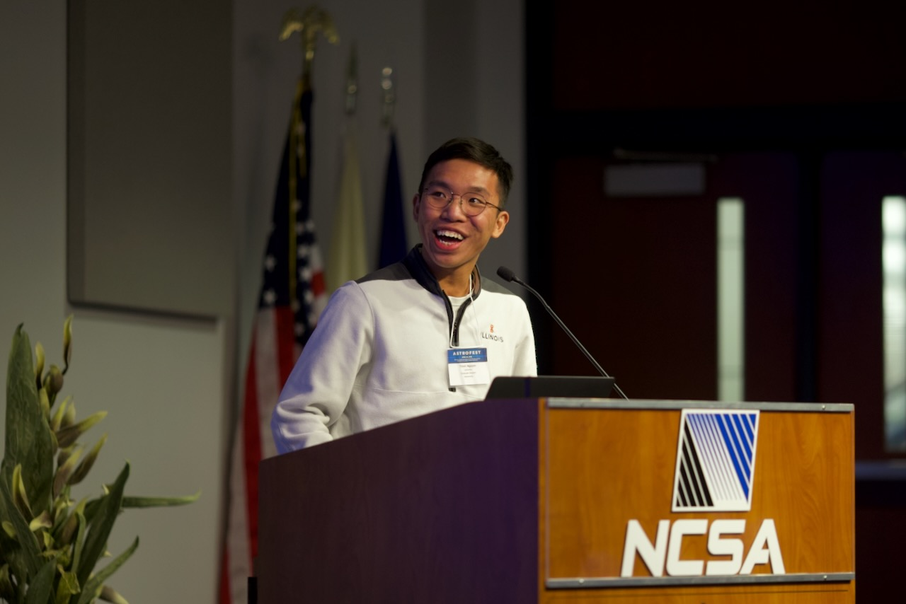
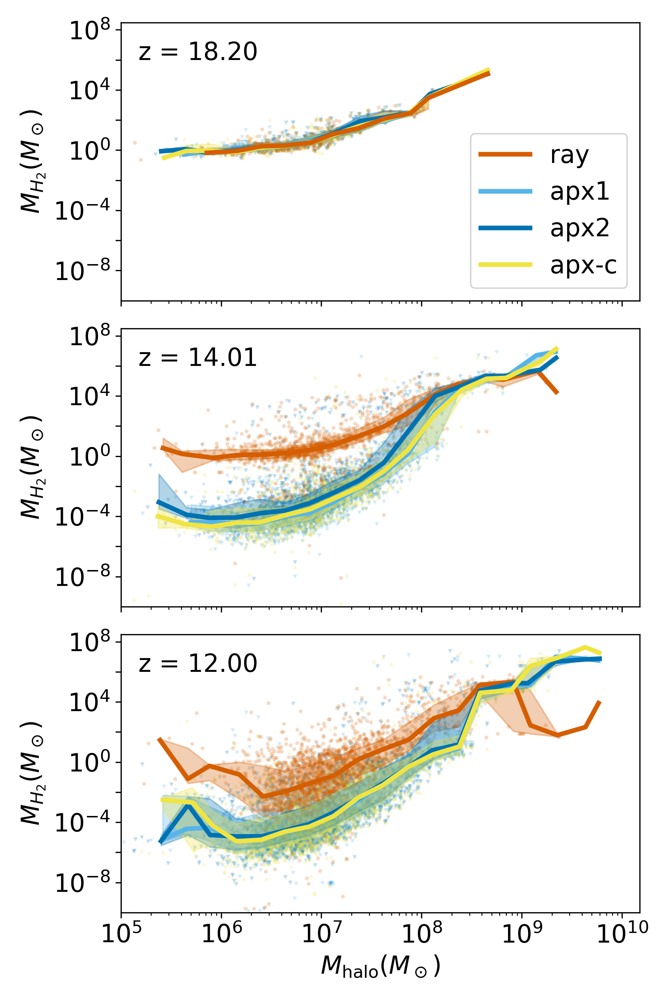
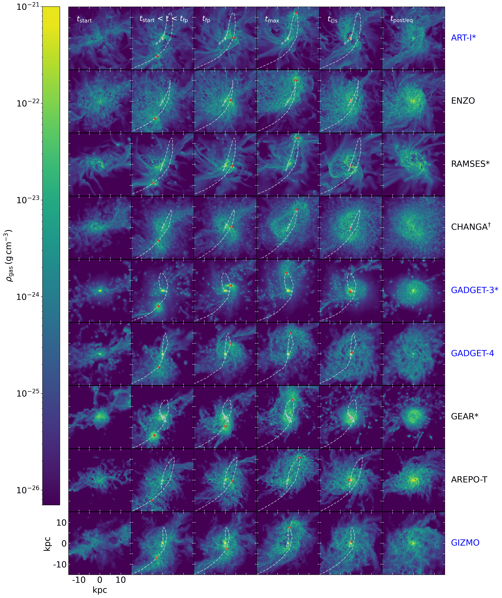

Hi! I am a fifth-year graduate student, Ph.D. candidate in Astronomy at the University of Illinois Urbana-Champaign.
I work with Professor Kirk Barrow to study galaxy evolution by using
hydrodynamic zoom-in cosmological simulations.
I am interested in galaxy mergers, particularly their dynamics and their effect
on star formation and morphology of galaxies. My work also focuses on examining
different numerical models in cosmological simulations
and their effect on the evolution of simulated galaxies. I love astronomy and nature not just
because of their complexity but also because of their beauty, so I am a bit of
a "romantic" scientist.
My goal is to become a professor who can inspire students to appreciate the beauty of science and to become lifelong learners and thinkers.
I really enjoy teaching. Seeing the "ah-ha moments" of students is one of the best experiences for me.

How the modeling of H2 self-shielding affects the properties of early galaxies (H2 mass, star formation, CGM, reionization, etc.) in radiative hydrodynamic cosmological simulations.

Galaxy DynamicsComparative studies using nine robustly-calibrated simulation codes from the AGORA collaboration to evaluate how the effects of a major galaxy merger (star formation response and the remnant's morphology) differ across hydrodynamic solvers and stellar feedback models.

The stellar feedback type of a cosmological simulation influences the stellar morphology (compactness and disc formation) of a merger remnant.
The stellar feedback type of a cosmological simulation affects the merger-driven star formation response in a major galaxy merger.
There are noticeable differences in the simulated galaxies' properties between using the Sobolev-like density-gradient approximation and the adaptive ray-tracing method to model H2 self-shielding
I am passionate about teaching and am striving to become a better educator. I love engaging in discussions with my students and watching them master new knowledge.
I am Vietnamese and I call the vibrant and loving city of Ho Chi Minh City home 🇻🇳. Outside of research, I enjoy traveling, hiking, photography, going to museums, and trying new restaurants/cuisines. If you are interested in my research, collaborating, or simply want to chat about anything on my website, feel free to reach me at thinhhn2@illinois.edu!